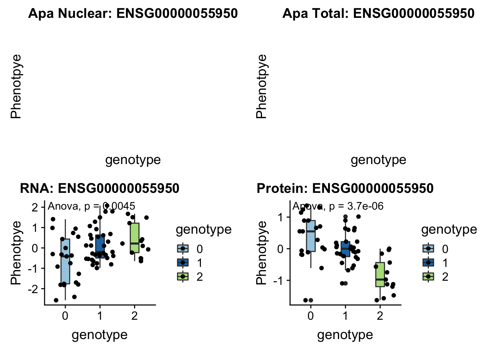
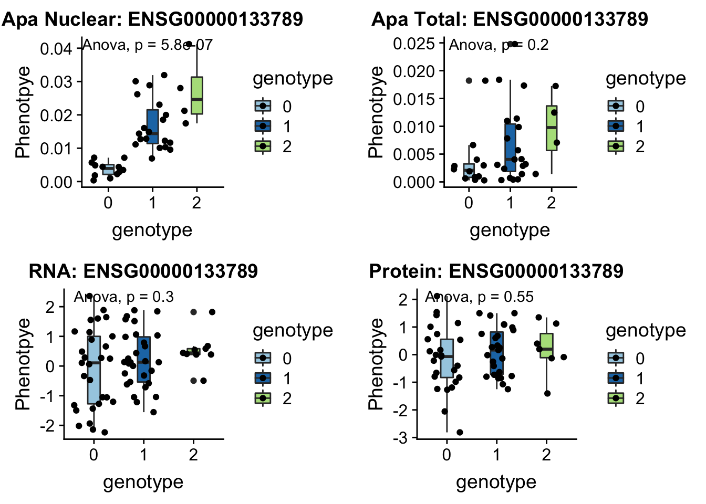
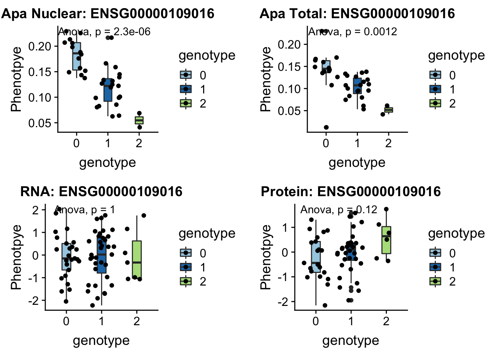
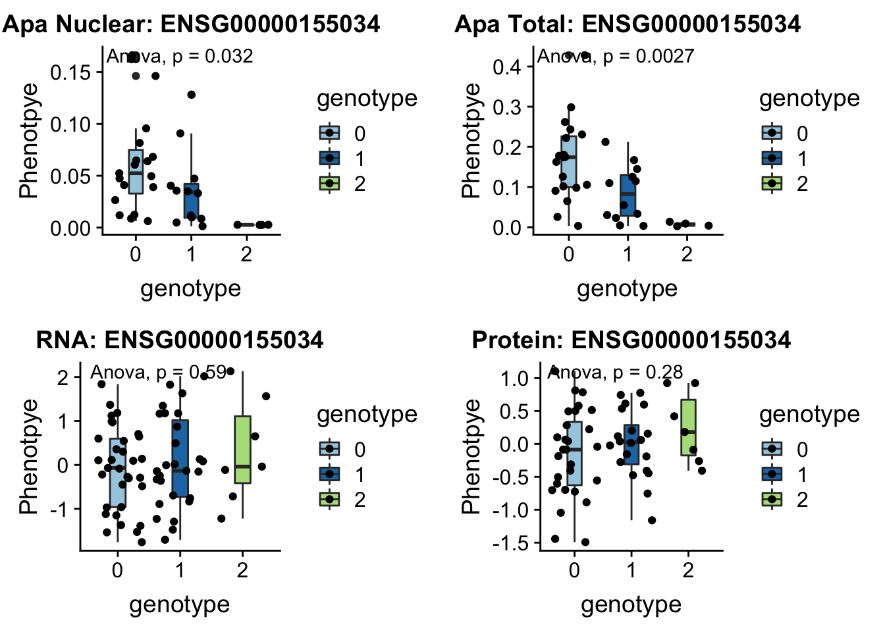
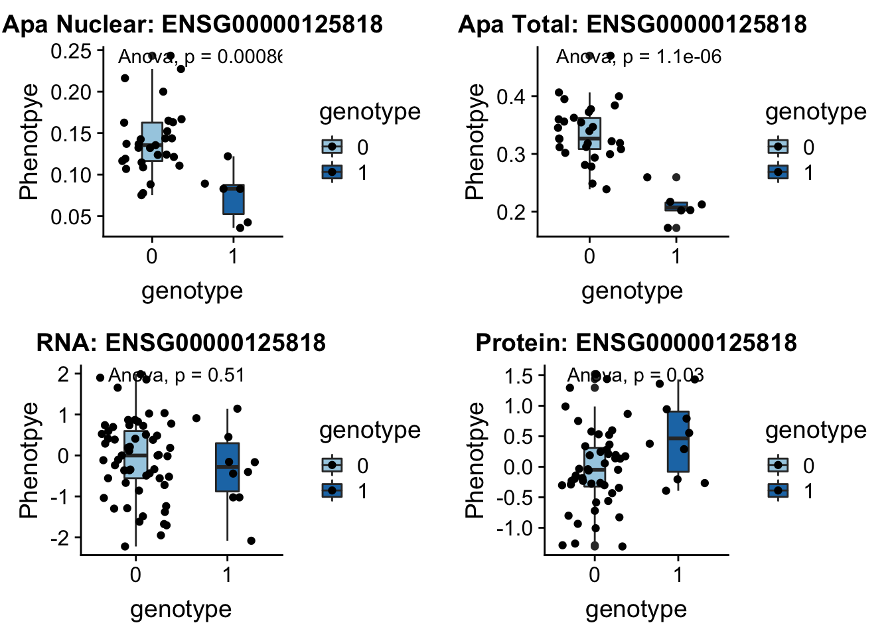
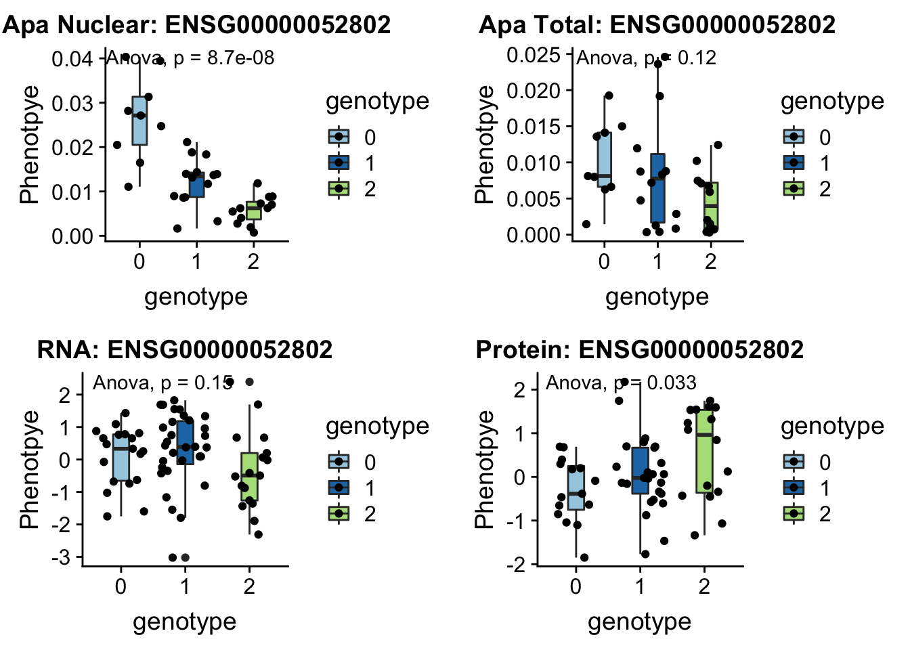
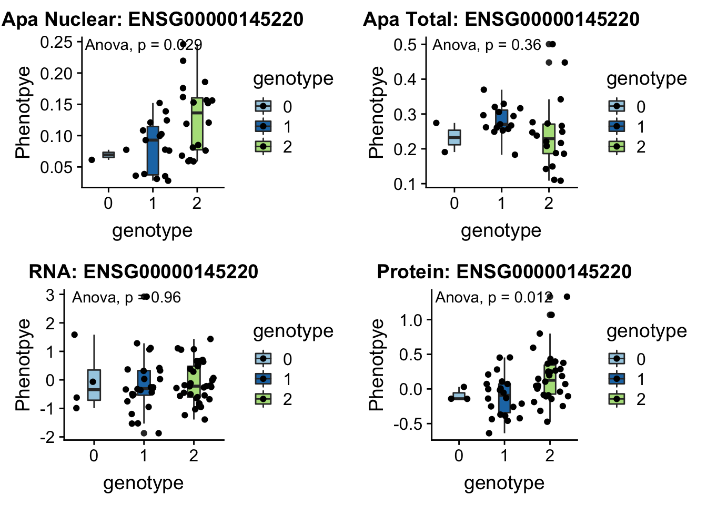
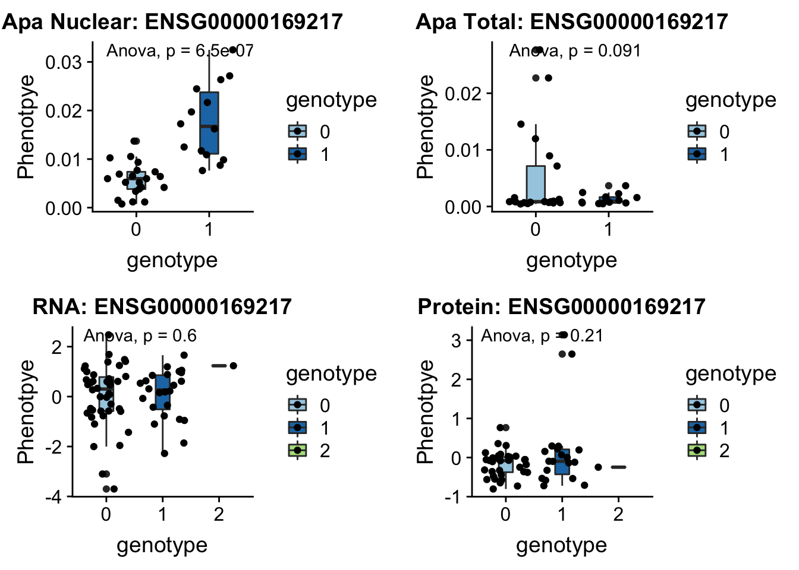
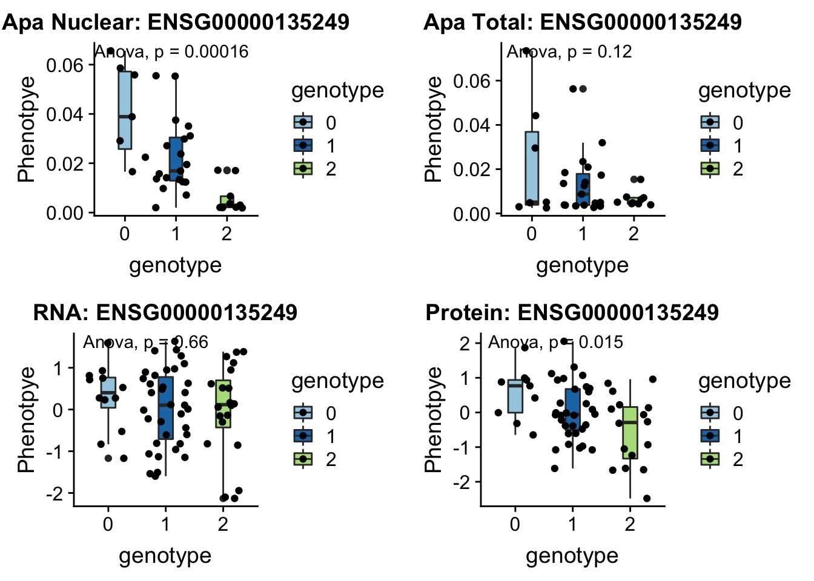

APA and Protien QTL overlap
Briana Mittleman
10/22/2018
Last updated: 2019-02-15
Checks: 6 0
Knit directory: threeprimeseq/analysis/
This reproducible R Markdown analysis was created with workflowr (version 1.2.0). The Report tab describes the reproducibility checks that were applied when the results were created. The Past versions tab lists the development history.
Great! Since the R Markdown file has been committed to the Git repository, you know the exact version of the code that produced these results.
Great job! The global environment was empty. Objects defined in the global environment can affect the analysis in your R Markdown file in unknown ways. For reproduciblity it’s best to always run the code in an empty environment.
The command set.seed(12345) was run prior to running the code in the R Markdown file. Setting a seed ensures that any results that rely on randomness, e.g. subsampling or permutations, are reproducible.
Great job! Recording the operating system, R version, and package versions is critical for reproducibility.
Nice! There were no cached chunks for this analysis, so you can be confident that you successfully produced the results during this run.
Great! You are using Git for version control. Tracking code development and connecting the code version to the results is critical for reproducibility. The version displayed above was the version of the Git repository at the time these results were generated.
Note that you need to be careful to ensure that all relevant files for the analysis have been committed to Git prior to generating the results (you can use wflow_publish or wflow_git_commit). workflowr only checks the R Markdown file, but you know if there are other scripts or data files that it depends on. Below is the status of the Git repository when the results were generated:
Ignored files:
Ignored: .DS_Store
Ignored: .Rhistory
Ignored: .Rproj.user/
Ignored: data/.DS_Store
Ignored: data/perm_QTL_trans_noMP_5percov/
Ignored: output/.DS_Store
Untracked files:
Untracked: KalistoAbundance18486.txt
Untracked: analysis/4suDataIGV.Rmd
Untracked: analysis/DirectionapaQTL.Rmd
Untracked: analysis/EvaleQTLs.Rmd
Untracked: analysis/YL_QTL_test.Rmd
Untracked: analysis/ncbiRefSeq_sm.sort.mRNA.bed
Untracked: analysis/snake.config.notes.Rmd
Untracked: analysis/verifyBAM.Rmd
Untracked: analysis/verifybam_dubs.Rmd
Untracked: code/PeaksToCoverPerReads.py
Untracked: code/strober_pc_pve_heatmap_func.R
Untracked: data/18486.genecov.txt
Untracked: data/APApeaksYL.total.inbrain.bed
Untracked: data/ApaQTLs/
Untracked: data/ChromHmmOverlap/
Untracked: data/DistTXN2Peak_genelocAnno/
Untracked: data/GM12878.chromHMM.bed
Untracked: data/GM12878.chromHMM.txt
Untracked: data/LianoglouLCL/
Untracked: data/LocusZoom/
Untracked: data/NuclearApaQTLs.txt
Untracked: data/PeakCounts/
Untracked: data/PeakCounts_noMP_5perc/
Untracked: data/PeakCounts_noMP_genelocanno/
Untracked: data/PeakUsage/
Untracked: data/PeakUsage_noMP/
Untracked: data/PeakUsage_noMP_GeneLocAnno/
Untracked: data/PeaksUsed/
Untracked: data/PeaksUsed_noMP_5percCov/
Untracked: data/RNAkalisto/
Untracked: data/RefSeq_annotations/
Untracked: data/TotalApaQTLs.txt
Untracked: data/Totalpeaks_filtered_clean.bed
Untracked: data/UnderstandPeaksQC/
Untracked: data/WASP_STAT/
Untracked: data/YL-SP-18486-T-combined-genecov.txt
Untracked: data/YL-SP-18486-T_S9_R1_001-genecov.txt
Untracked: data/YL_QTL_test/
Untracked: data/apaExamp/
Untracked: data/apaQTL_examp_noMP/
Untracked: data/bedgraph_peaks/
Untracked: data/bin200.5.T.nuccov.bed
Untracked: data/bin200.Anuccov.bed
Untracked: data/bin200.nuccov.bed
Untracked: data/clean_peaks/
Untracked: data/comb_map_stats.csv
Untracked: data/comb_map_stats.xlsx
Untracked: data/comb_map_stats_39ind.csv
Untracked: data/combined_reads_mapped_three_prime_seq.csv
Untracked: data/diff_iso_GeneLocAnno/
Untracked: data/diff_iso_proc/
Untracked: data/diff_iso_trans/
Untracked: data/ensemble_to_genename.txt
Untracked: data/example_gene_peakQuant/
Untracked: data/explainProtVar/
Untracked: data/filtPeakOppstrand_cov_noMP_GeneLocAnno_5perc/
Untracked: data/filtered_APApeaks_merged_allchrom_refseqTrans.closest2End.bed
Untracked: data/filtered_APApeaks_merged_allchrom_refseqTrans.closest2End.noties.bed
Untracked: data/first50lines_closest.txt
Untracked: data/gencov.test.csv
Untracked: data/gencov.test.txt
Untracked: data/gencov_zero.test.csv
Untracked: data/gencov_zero.test.txt
Untracked: data/gene_cov/
Untracked: data/joined
Untracked: data/leafcutter/
Untracked: data/merged_combined_YL-SP-threeprimeseq.bg
Untracked: data/molPheno_noMP/
Untracked: data/mol_overlap/
Untracked: data/mol_pheno/
Untracked: data/nom_QTL/
Untracked: data/nom_QTL_opp/
Untracked: data/nom_QTL_trans/
Untracked: data/nuc6up/
Untracked: data/nuc_10up/
Untracked: data/other_qtls/
Untracked: data/pQTL_otherphen/
Untracked: data/peakPerRefSeqGene/
Untracked: data/perm_QTL/
Untracked: data/perm_QTL_GeneLocAnno_noMP_5percov/
Untracked: data/perm_QTL_GeneLocAnno_noMP_5percov_3UTR/
Untracked: data/perm_QTL_opp/
Untracked: data/perm_QTL_trans/
Untracked: data/perm_QTL_trans_filt/
Untracked: data/protAndAPAAndExplmRes.Rda
Untracked: data/protAndAPAlmRes.Rda
Untracked: data/protAndExpressionlmRes.Rda
Untracked: data/reads_mapped_three_prime_seq.csv
Untracked: data/smash.cov.results.bed
Untracked: data/smash.cov.results.csv
Untracked: data/smash.cov.results.txt
Untracked: data/smash_testregion/
Untracked: data/ssFC200.cov.bed
Untracked: data/temp.file1
Untracked: data/temp.file2
Untracked: data/temp.gencov.test.txt
Untracked: data/temp.gencov_zero.test.txt
Untracked: data/threePrimeSeqMetaData.csv
Untracked: data/threePrimeSeqMetaData55Ind.txt
Untracked: data/threePrimeSeqMetaData55Ind.xlsx
Untracked: data/threePrimeSeqMetaData55Ind_noDup.txt
Untracked: data/threePrimeSeqMetaData55Ind_noDup.xlsx
Untracked: data/threePrimeSeqMetaData55Ind_noDup_WASPMAP.txt
Untracked: data/threePrimeSeqMetaData55Ind_noDup_WASPMAP.xlsx
Untracked: output/picard/
Untracked: output/plots/
Untracked: output/qual.fig2.pdf
Unstaged changes:
Modified: analysis/28ind.peak.explore.Rmd
Modified: analysis/CompareLianoglouData.Rmd
Modified: analysis/NewPeakPostMP.Rmd
Modified: analysis/apaQTLoverlapGWAS.Rmd
Modified: analysis/cleanupdtseq.internalpriming.Rmd
Modified: analysis/coloc_apaQTLs_protQTLs.Rmd
Modified: analysis/dif.iso.usage.leafcutter.Rmd
Modified: analysis/diff_iso_pipeline.Rmd
Modified: analysis/explainpQTLs.Rmd
Modified: analysis/explore.filters.Rmd
Modified: analysis/flash2mash.Rmd
Modified: analysis/mispriming_approach.Rmd
Modified: analysis/overlapMolQTL.Rmd
Modified: analysis/overlapMolQTL.opposite.Rmd
Modified: analysis/overlap_qtls.Rmd
Modified: analysis/peakOverlap_oppstrand.Rmd
Modified: analysis/peakQCPPlots.Rmd
Modified: analysis/pheno.leaf.comb.Rmd
Modified: analysis/pipeline_55Ind.Rmd
Modified: analysis/swarmPlots_QTLs.Rmd
Modified: analysis/test.max2.Rmd
Modified: analysis/test.smash.Rmd
Modified: analysis/understandPeaks.Rmd
Modified: code/Snakefile
Note that any generated files, e.g. HTML, png, CSS, etc., are not included in this status report because it is ok for generated content to have uncommitted changes.
These are the previous versions of the R Markdown and HTML files. If you’ve configured a remote Git repository (see ?wflow_git_remote), click on the hyperlinks in the table below to view them.
| File | Version | Author | Date | Message |
|---|---|---|---|---|
| html | d59b3c1 | Briana Mittleman | 2018-10-24 | Build site. |
| Rmd | d8c6f3c | Briana Mittleman | 2018-10-24 | add ven diagrams |
| Rmd | 70a8d68 | Briana Mittleman | 2018-10-23 | add anova pvalue to examples |
| html | 5649809 | Briana Mittleman | 2018-10-22 | Build site. |
| Rmd | c8dbaf0 | Briana Mittleman | 2018-10-22 | add apa prot rna overlap |
I want to use this analysis to look at the genes with a APAQTL and a protein QTL. I am trying to understand how many of these are independent of RNA.
I will first look at genes with significant QTLs in both phenotypes. I can use the pipeline I created in https://brimittleman.github.io/threeprimeseq/swarmPlots_QTLs.html to vizualize these snps.
library(workflowr)This is workflowr version 1.2.0
Run ?workflowr for help getting startedlibrary(tidyverse)── Attaching packages ───────────────────────────────────────────────────────────── tidyverse 1.2.1 ──✔ ggplot2 3.0.0 ✔ purrr 0.2.5
✔ tibble 1.4.2 ✔ dplyr 0.7.6
✔ tidyr 0.8.1 ✔ stringr 1.4.0
✔ readr 1.1.1 ✔ forcats 0.3.0Warning: package 'stringr' was built under R version 3.5.2── Conflicts ──────────────────────────────────────────────────────────────── tidyverse_conflicts() ──
✖ dplyr::filter() masks stats::filter()
✖ dplyr::lag() masks stats::lag()library(data.table)
Attaching package: 'data.table'The following objects are masked from 'package:dplyr':
between, first, lastThe following object is masked from 'package:purrr':
transposelibrary(cowplot)
Attaching package: 'cowplot'The following object is masked from 'package:ggplot2':
ggsavelibrary(ggpubr)Loading required package: magrittr
Attaching package: 'magrittr'The following object is masked from 'package:purrr':
set_namesThe following object is masked from 'package:tidyr':
extract
Attaching package: 'ggpubr'The following object is masked from 'package:cowplot':
get_legendlibrary(VennDiagram)Loading required package: gridLoading required package: futile.logger
Attaching package: 'VennDiagram'The following object is masked from 'package:ggpubr':
rotatelibrary(gridExtra)
Attaching package: 'gridExtra'The following object is masked from 'package:dplyr':
combineGene Names:
geneNames=read.table("../data/ensemble_to_genename.txt", stringsAsFactors = F, header = T, sep="\t")Significant APA QTLS:
nuclearAPA=read.table("../data/perm_QTL_trans/filtered_APApeaks_merged_allchrom_refseqGenes_pheno_Nuclear_transcript_permResBH.txt", stringsAsFactors = F, header = T) %>% separate(pid, into=c("chr", "start", "end", "id"), sep=":") %>% separate(id, into=c("Gene.name", "strand", "peaknum"), sep="_") %>% dplyr::filter(-log10(bh)>1)
totalAPA=read.table("../data/perm_QTL_trans/filtered_APApeaks_merged_allchrom_refseqGenes_pheno_Total_transcript_permResBH.txt", stringsAsFactors = F, header=T) %>% separate(pid, into=c("chr", "start", "end", "id"), sep=":") %>% separate(id, into=c("Gene.name", "strand", "peaknum"), sep="_") %>% dplyr::filter(-log10(bh)>1)Significant Protien QTLs
protQTL=read.table("../data/other_qtls/fastqtl_qqnorm_prot.fixed.perm.out", col.names = c("Gene.stable.ID", "nvar", "shape1", "shape2", "dummy", "sid", "dist", "npval", "slope", "ppval", "bpval"),stringsAsFactors=F) %>% inner_join(geneNames, by="Gene.stable.ID") %>% dplyr::select("Gene.name", "nvar", "shape1", "shape2", "dummy", "sid", "dist", "npval", "slope", "ppval", "bpval")
protQTL$bh=p.adjust(protQTL$bpval, method="fdr")
protQTL_sig= protQTL %>% dplyr::filter(-log10(bh)>1)Gene Level
Overlap the QTLs by gene name:
genesBothTot=protQTL_sig %>% inner_join(totalAPA, by=c("Gene.name"))
genesBotNuc=protQTL_sig %>% inner_join(nuclearAPA, by=c("Gene.name"))These are the genes that have a significant QTL in both.They are not the same snp. This may be because I am using the permuted snps. I will use the APA snp to make the plot.
plotQTL_func= function(SNP, peak, gene){
apaN_file=read.table(paste("../data/apaExamp/qtlSNP_PeakAPANuclear.", SNP, peak, ".txt", sep = "" ), header=T)
apaT_file=read.table(paste("../data/apaExamp/qtlSNP_PeakAPATotal.", SNP, peak, ".txt", sep = "" ), header=T)
su30_file=read.table(paste("../data/apaExamp/qtlSNP_Peak_4su_30_", SNP, gene, ".txt", sep=""), header = T)
su60_file=read.table(paste("../data/apaExamp/qtlSNP_Peak_4su_60_", SNP, gene, ".txt", sep=""), header=T)
RNA_file=read.table(paste("../data/apaExamp/qtlSNP_Peak_RNAseq_", SNP, gene, ".txt", sep=""),header=T)
RNAg_file=read.table(paste("../data/apaExamp/qtlSNP_Peak_RNAseqGeuvadis_", SNP, gene, ".txt", sep=""), header = T)
ribo_file=read.table(paste("../data/apaExamp/qtlSNP_Peak_ribo_", SNP, gene, ".txt", sep=""),header=T)
prot_file=read.table(paste("../data/apaExamp/qtlSNP_Peak_prot.", SNP, gene, ".txt", sep=""), header=T)
ggplot_func= function(file, molPhen,GENE,allOverlap_T){
file = file %>% mutate(genotype=Allele1 + Allele2)
file$genotype= as.factor(as.character(file$genotype))
plot=ggplot(file, aes(y=Pheno, x=genotype, by=genotype, fill=genotype)) + geom_boxplot(width=.25) + geom_jitter() + labs(y="Phenotpye",title=paste(molPhen, GENE, sep=": ")) + scale_fill_brewer(palette="Paired") + stat_compare_means(method = "anova", label.y.npc = "top")
return(plot)
}
apaNplot=ggplot_func(apaN_file, "Apa Nuclear", gene)
apaTplot=ggplot_func(apaT_file, "Apa Total", gene)
su30plot=ggplot_func(su30_file, "4su30",gene)
su60plot=ggplot_func(su60_file, "4su60",gene)
RNAplot=ggplot_func(RNA_file, "RNA",gene)
RNAgPlot=ggplot_func(RNAg_file, "RNAg",gene)
riboPlot= ggplot_func(ribo_file, "Ribo",gene)
protplot=ggplot_func(prot_file, "Protein",gene)
full_plot= plot_grid(apaNplot,apaTplot, RNAplot, protplot,nrow=2)
return (full_plot)
}Total:
- MRPL43 peak44585 10:102740271
grep MRPL43 /project2/gilad/briana/genome_anotation_data/ensemble_to_genename.txt
#ENSG00000055950
python createQTLsnpAPAPhenTable.py 10 10:102740271 peak44585 Total
python createQTLsnpAPAPhenTable.py 10 10:102740271 peak44585 Nuclear
sbatch run_createQTLsnpMolPhenTable.sh "10" "10:102740271" "ENSG00000055950"
#into apaExamp
scp brimittleman@midway2.rcc.uchicago.edu:/project2/gilad/briana/threeprimeseq/data/ApaQTL_examples/*10:102740271* .
plotQTL_func(SNP="10:102740271", peak="peak44585", gene="ENSG00000055950")
Nuclear:
- SWAP70 peak49384 11:9732917
grep SWAP70 /project2/gilad/briana/genome_anotation_data/ensemble_to_genename.txt
#ENSG00000133789
python createQTLsnpAPAPhenTable.py 11 11:9732917 peak49384 Total
python createQTLsnpAPAPhenTable.py 11 11:9732917 peak49384 Nuclear
sbatch run_createQTLsnpMolPhenTable.sh "11" "11:9732917" "ENSG00000133789"
#into apaExamp
scp brimittleman@midway2.rcc.uchicago.edu:/project2/gilad/briana/threeprimeseq/data/ApaQTL_examples/*11:9732917* .
plotQTL_func(SNP="11:9732917", peak="peak49384", gene="ENSG00000133789")
- DHRS7B peak132739 17:21102458
grep DHRS7B /project2/gilad/briana/genome_anotation_data/ensemble_to_genename.txt
#ENSG00000109016
python createQTLsnpAPAPhenTable.py 17 17:21102458 peak132739 Total
python createQTLsnpAPAPhenTable.py 17 17:21102458 peak132739 Nuclear
sbatch run_createQTLsnpMolPhenTable.sh "17" "17:21102458" "ENSG00000109016"
#into apaExamp
scp brimittleman@midway2.rcc.uchicago.edu:/project2/gilad/briana/threeprimeseq/data/ApaQTL_examples/*17:21102458* .
plotQTL_func(SNP="17:21102458", peak="peak132739", gene="ENSG00000109016")
- UBA6 peak240167 4:68502794
grep UBA6 /project2/gilad/briana/genome_anotation_data/ensemble_to_genename.txt
#ENSG00000033178
python createQTLsnpAPAPhenTable.py 4 4:68502794 peak240167 Total
python createQTLsnpAPAPhenTable.py 4 4:68502794 peak240167 Nuclear
sbatch run_createQTLsnpMolPhenTable.sh "4" "4:68502794" "ENSG00000033178"
#into apaExamp
scp brimittleman@midway2.rcc.uchicago.edu:/project2/gilad/briana/threeprimeseq/data/ApaQTL_examples/*4:68502794* .
plotQTL_func(SNP="4:68502794", peak="peak240167", gene="ENSG00000033178")
This is not the most effective way to do this because I am overlapping by gene then looking at the effect of the apaQTL snp. I want a method that will look directly at the effect of one snp. I can use the overlap files I created based on the APA qtls in other phenotypes. I can overlap the phenotypes and look for snps that have low pvalues in APA and protien.
SNP level
Total
I want the overlap where I started in APA qtls and found the snp in the mol file. I am starting with the total.
totAPAinsu30=read.table("../data/mol_overlap/APA2molTotal/TotAPAqtlsPval4su30.txt", header = T, stringsAsFactors = F)
totAPAinsu60=read.table("../data/mol_overlap/APA2molTotal/TotAPAqtlsPval4su60.txt", header = T, stringsAsFactors = F)
totAPAinRNA=read.table("../data/mol_overlap/APA2molTotal/TotAPAqtlsPvalRNA.txt", header = T, stringsAsFactors = F)
totAPAinRNAg=read.table("../data/mol_overlap/APA2molTotal/TotAPAqtlsPvalRNAg.txt", header = T, stringsAsFactors = F)
totAPAinRibo=read.table("../data/mol_overlap/APA2molTotal/TotAPAqtlsPvalribo.txt", header = T, stringsAsFactors = F)
totAPAinProt=read.table("../data/mol_overlap/APA2molTotal/TotAPAqtlsPvalProtein.txt", header = T, stringsAsFactors = F)
allOverlap_T=totAPAinsu30 %>% full_join(totAPAinsu60, by=c("Gene.name", "sid")) %>% full_join(totAPAinRNA, by=c("Gene.name", "sid")) %>% full_join(totAPAinRNAg, by=c("Gene.name", "sid")) %>% full_join(totAPAinRibo, by=c("Gene.name", "sid")) %>% full_join(totAPAinProt, by=c("Gene.name", "sid"))
colnames(allOverlap_T)=c("Gene.name", "sid", "su30", "su60", "RNA", "RNAg", "ribo", "prot")plot(sort(allOverlap_T$prot))
| Version | Author | Date |
|---|---|---|
| 5649809 | Briana Mittleman | 2018-10-22 |
plot(allOverlap_T$RNA ~ allOverlap_T$prot)
| Version | Author | Date |
|---|---|---|
| 5649809 | Briana Mittleman | 2018-10-22 |
I want to make a ggplot of these where I color them by RNA pvalue:
allOverlap_T_lowP=allOverlap_T %>% dplyr::filter(prot<.05)
ggplot(allOverlap_T_lowP, aes(x=RNA, y=prot)) + geom_point()+ geom_text(aes(label=Gene.name),hjust=0, vjust=0) + geom_vline(xintercept = .05, col="red")
| Version | Author | Date |
|---|---|---|
| 5649809 | Briana Mittleman | 2018-10-22 |
ggplot(allOverlap_T_lowP, aes(x=RNAg, y=prot)) + geom_point()+ geom_text(aes(label=Gene.name),hjust=0, vjust=0) + geom_vline(xintercept = .05, col="red")
| Version | Author | Date |
|---|---|---|
| 5649809 | Briana Mittleman | 2018-10-22 |
I can use these to look for examples of SNPs that are significant in prot but not in RNA.
Look at some of these:
Total RNA:
* SACM1L
* EBI3
* FBXL18
* PSMF1
* COX17
Total RNAg:
* EBI3
* FBXL18
* APBB1IP * PSMF1
Look at some examples of genes that come up in both.
EBI3 peak152751 19:4236475
Expressed in B lymphocytes in response to EB virus.
grep EBI3 /project2/gilad/briana/genome_anotation_data/ensemble_to_genename.txt
#ENSG00000105246
python createQTLsnpAPAPhenTable.py 19 19:4236475 peak152751 Total
python createQTLsnpAPAPhenTable.py 19 19:4236475 peak152751 Nuclear
sbatch run_createQTLsnpMolPhenTable.sh "19" "19:4236475" "ENSG00000105246"
#into apaExamp
scp brimittleman@midway2.rcc.uchicago.edu:/project2/gilad/briana/threeprimeseq/data/ApaQTL_examples/*19:4236475* .
plotQTL_func(SNP="19:4236475", peak="peak152751", gene="ENSG00000105246")
FBXL18 peak291746 7:5524129
“The protein encoded by this gene is a member of a family of proteins that contain an approximately 40-amino acid F-box motif. This motif is important for interaction with SKP1 and for targeting some proteins for degradation.” genecards.org
grep FBXL18 /project2/gilad/briana/genome_anotation_data/ensemble_to_genename.txt
#ENSG00000155034
python createQTLsnpAPAPhenTable.py 7 7:5524129 peak291746 Total
python createQTLsnpAPAPhenTable.py 7 7:5524129 peak291746 Nuclear
sbatch run_createQTLsnpMolPhenTable.sh "7" "7:5524129" "ENSG00000155034"
#into apaExamp
scp brimittleman@midway2.rcc.uchicago.edu:/project2/gilad/briana/threeprimeseq/data/ApaQTL_examples/*7:5524129* .
plotQTL_func(SNP="7:5524129", peak="peak291746", gene="ENSG00000155034")Warning: Removed 4 rows containing non-finite values (stat_boxplot).Warning: Removed 4 rows containing non-finite values (stat_compare_means).Warning: Removed 4 rows containing missing values (geom_point).
- PSMF1 peak193648 20:1131308
This gene codes the 26S proteasome.
grep PSMF1 /project2/gilad/briana/genome_anotation_data/ensemble_to_genename.txt
#ENSG00000125818
python createQTLsnpAPAPhenTable.py 20 20:1131308 peak193648 Total
python createQTLsnpAPAPhenTable.py 20 20:1131308 peak193648 Nuclear
sbatch run_createQTLsnpMolPhenTable.sh "20" "20:1131308" "ENSG00000125818"
#into apaExamp
scp brimittleman@midway2.rcc.uchicago.edu:/project2/gilad/briana/threeprimeseq/data/ApaQTL_examples/*20:1131308* .
plotQTL_func(SNP="20:1131308", peak="peak193648", gene="ENSG00000125818")Warning: Removed 2 rows containing non-finite values (stat_boxplot).Warning: Removed 2 rows containing non-finite values (stat_compare_means).Warning: Removed 2 rows containing missing values (geom_point).
I want to know the number of these that are <.05 in protien and above .1 in RNA
allOverlap_T_lowP_highRNA=allOverlap_T %>% dplyr::filter(prot<.05) %>% dplyr::filter(RNA>.05)
allOverlap_T_lowP_highRNAg=allOverlap_T %>% dplyr::filter(prot<.05) %>% dplyr::filter(RNAg>.05)8 snps with < .05 for protein. Of those 6 have RNA pvalues greater than .05
6/8[1] 0.75Nuclear
nucAPAinsu30=read.table("../data/mol_overlap/APA2molNuclear/NucAPAqtlsPval4su30.txt", header = T, stringsAsFactors = F)
nucAPAinsu60=read.table("../data/mol_overlap/APA2molNuclear/NucAPAqtlsPval4su60.txt", header = T, stringsAsFactors = F)
nucAPAinRNA=read.table("../data/mol_overlap/APA2molNuclear/NucAPAqtlsPvalRNA.txt", header = T, stringsAsFactors = F)
nucAPAinRNAg=read.table("../data/mol_overlap/APA2molNuclear/NucAPAqtlsPvalRNAg.txt", header = T, stringsAsFactors = F)
nucAPAinRibo=read.table("../data/mol_overlap/APA2molNuclear/NucAPAqtlsPvalribo.txt", header = T, stringsAsFactors = F)
nucAPAinProt=read.table("../data/mol_overlap/APA2molNuclear/NucAPAqtlsPvalProtein.txt", header = T, stringsAsFactors = F)
allOverlap_N=nucAPAinsu30 %>% full_join(nucAPAinsu60, by=c("Gene.name", "sid")) %>% full_join(nucAPAinRNA, by=c("Gene.name", "sid")) %>% full_join(nucAPAinRNAg, by=c("Gene.name", "sid")) %>% full_join(nucAPAinRibo, by=c("Gene.name", "sid")) %>% full_join(nucAPAinProt, by=c("Gene.name", "sid"))
colnames(allOverlap_N)=c("Gene.name", "sid", "su30", "su60", "RNA", "RNAg", "ribo", "prot")#subset by prot < .05
allOverlap_N_lowP=allOverlap_N %>% dplyr::filter(prot<.05)
ggplot(allOverlap_N_lowP, aes(x=RNA, y=prot)) + geom_point()+ geom_text(aes(label=Gene.name),hjust=0, vjust=0)+ geom_vline(xintercept = .05, col="red")
| Version | Author | Date |
|---|---|---|
| 5649809 | Briana Mittleman | 2018-10-22 |
ggplot(allOverlap_N_lowP, aes(x=RNAg, y=prot)) + geom_point()+ geom_text(aes(label=Gene.name),hjust=0, vjust=0)+ geom_vline(xintercept = .05, col="red")
| Version | Author | Date |
|---|---|---|
| 5649809 | Briana Mittleman | 2018-10-22 |
allOverlap_N_lowP_highRNA=allOverlap_N %>% dplyr::filter(prot<.05) %>% dplyr::filter(RNA>.05)
allOverlap_N_lowP_highRNAg=allOverlap_N %>% dplyr::filter(prot<.05) %>% dplyr::filter(RNAg>.05)39 snps with < .05 for protein. Of those 28 have RNA pvalues greater than .05
28/39[1] 0.7179487inBothN= allOverlap_N_lowP_highRNAg %>% inner_join(allOverlap_N_lowP_highRNA, by=c("Gene.name", "sid", "su30", "su60", "RNA", "RNAg", "ribo", "prot")) %>% arrange(desc(RNA))inBothN$Gene.name[1:5][1] "MSMO1" "LYAR" "CD2BP2" "KDM2A" "RINT1" - MSMO1 4:166260601 peak249109
contains metal binding motifs, known alternative splice isoforms
grep MSMO1 /project2/gilad/briana/genome_anotation_data/ensemble_to_genename.txt
#ENSG00000052802
python createQTLsnpAPAPhenTable.py 4 4:166260601 peak249109 Total
python createQTLsnpAPAPhenTable.py 4 4:166260601 peak249109 Nuclear
sbatch run_createQTLsnpMolPhenTable.sh "4" "4:166260601" "ENSG00000052802"
#into apaExamp
scp brimittleman@midway2.rcc.uchicago.edu:/project2/gilad/briana/threeprimeseq/data/ApaQTL_examples/*4:166260601* .
plotQTL_func(SNP="4:166260601", peak="peak249109", gene="ENSG00000052802")Warning: Removed 3 rows containing non-finite values (stat_boxplot).Warning: Removed 3 rows containing non-finite values (stat_compare_means).Warning: Removed 3 rows containing missing values (geom_point).
- LYAR peak235215 4:4196045
involved in processing pre-rRNA
grep LYAR /project2/gilad/briana/genome_anotation_data/ensemble_to_genename.txt
#ENSG00000145220
python createQTLsnpAPAPhenTable.py 4 4:4196045 peak235215 Total
python createQTLsnpAPAPhenTable.py 4 4:4196045 peak235215 Nuclear
sbatch run_createQTLsnpMolPhenTable.sh "4" "4:4196045" "ENSG00000145220"
#into apaExamp
scp brimittleman@midway2.rcc.uchicago.edu:/project2/gilad/briana/threeprimeseq/data/ApaQTL_examples/*4:4196045* .
plotQTL_func(SNP="4:4196045", peak="peak235215", gene="ENSG00000145220")
CD2BP2 peak122237 16:29898001
From genecards: “in the cytoplasm, the encoded protein binds the cytoplasmic tail of human surface antigen CD2 via its C-terminal GYF domain, and regulate CD2-triggered T lymphocyte activation. In the nucleus, this protein is a component of the U5 small nuclear ribonucleoprotein complex and is involved in RNA splicing.”
grep CD2BP2 /project2/gilad/briana/genome_anotation_data/ensemble_to_genename.txt
#ENSG00000169217
python createQTLsnpAPAPhenTable.py 16 16:29898001 peak122237 Total
python createQTLsnpAPAPhenTable.py 16 16:29898001 peak122237 Nuclear
sbatch run_createQTLsnpMolPhenTable.sh "16" "16:29898001" "ENSG00000169217"
#into apaExamp
scp brimittleman@midway2.rcc.uchicago.edu:/project2/gilad/briana/threeprimeseq/data/ApaQTL_examples/*16:29898001* .
plotQTL_func(SNP="16:29898001", peak="peak122237", gene="ENSG00000169217")Warning: Removed 5 rows containing non-finite values (stat_boxplot).Warning: Removed 5 rows containing non-finite values (stat_compare_means).Warning: Removed 5 rows containing missing values (geom_point).
KDM2A peak55622 11:66851583
grep KDM2A /project2/gilad/briana/genome_anotation_data/ensemble_to_genename.txt
#ENSG00000173120
python createQTLsnpAPAPhenTable.py 11 11:66851583 peak55622 Total
python createQTLsnpAPAPhenTable.py 11 11:66851583 peak55622 Nuclear
sbatch run_createQTLsnpMolPhenTable.sh "11" "11:66851583" "ENSG00000173120"
#into apaExamp
scp brimittleman@midway2.rcc.uchicago.edu:/project2/gilad/briana/threeprimeseq/data/ApaQTL_examples/*11:66851583* .
plotQTL_func(SNP="11:66851583", peak="peak55622", gene="ENSG00000173120")Warning: Removed 8 rows containing non-finite values (stat_boxplot).Warning: Removed 8 rows containing non-finite values (stat_compare_means).Warning: Removed 8 rows containing missing values (geom_point).
RINT1 peak303436 7:105155320
Interacts with double strand break repair protiens, regulates cell cycle and telomere length
grep RINT1 /project2/gilad/briana/genome_anotation_data/ensemble_to_genename.txt
#ENSG00000135249
python createQTLsnpAPAPhenTable.py 7 7:105155320 peak303436 Total
python createQTLsnpAPAPhenTable.py 7 7:105155320 peak303436 Nuclear
sbatch run_createQTLsnpMolPhenTable.sh "7" "7:105155320" "ENSG00000135249"
#into apaExamp
scp brimittleman@midway2.rcc.uchicago.edu:/project2/gilad/briana/threeprimeseq/data/ApaQTL_examples/*7:105155320* .
plotQTL_func(SNP="7:105155320", peak="peak303436", gene="ENSG00000135249")Warning: Removed 2 rows containing non-finite values (stat_boxplot).Warning: Removed 2 rows containing non-finite values (stat_compare_means).Warning: Removed 2 rows containing missing values (geom_point).
Significance
In the next step I need to add significance to the boxplots and think more about the significance cutoffs.
Maybe I can compare 2 other phenotypes for <.05 and >.05 to see if the percentage is less than what I see for RNA and protein.
sigProt=allOverlap_N_lowP %>% nrow()
paste("Sig Prot", sigProt, sep=" ")[1] "Sig Prot 39"allOverlap_N_lowP_higrna=allOverlap_N %>% dplyr::filter(prot<.05) %>% dplyr::filter(RNA>.05) %>%nrow()
paste("Sig Prot not RNA", allOverlap_N_lowP_higrna, sep=" ")[1] "Sig Prot not RNA 28"allOverlap_N_lowP_higribo=allOverlap_N %>% dplyr::filter(prot<.05) %>% dplyr::filter(ribo>.05) %>%nrow()
paste("Sig Prot not ribo", allOverlap_N_lowP_higribo, sep=" ")[1] "Sig Prot not ribo 23"allOverlap_N_lowP_higsu30=allOverlap_N %>% dplyr::filter(prot<.05) %>% dplyr::filter(su30>.05) %>% nrow()
paste("Sig Prot not 4su30", allOverlap_N_lowP_higsu30, sep=" ")[1] "Sig Prot not 4su30 31"allOverlap_N_lowP_higsu60=allOverlap_N %>% dplyr::filter(prot<.05) %>% dplyr::filter(su60>.05) %>% nrow()
paste("Sig Prot not 4su60", allOverlap_N_lowP_higsu60, sep=" ")[1] "Sig Prot not 4su60 27"sigProtT=allOverlap_T_lowP %>% nrow()
paste("Sig Prot", sigProtT, sep=" ")[1] "Sig Prot 8"allOverlap_T_lowP_higrna=allOverlap_T %>% dplyr::filter(prot<.05) %>% dplyr::filter(RNA>.05) %>%nrow()
paste("Sig Prot not RNA", allOverlap_T_lowP_higrna, sep=" ")[1] "Sig Prot not RNA 6"allOverlap_T_lowP_higribo=allOverlap_T %>% dplyr::filter(prot<.05) %>% dplyr::filter(ribo>.05) %>%nrow()
paste("Sig Prot not ribo", allOverlap_T_lowP_higribo, sep=" ")[1] "Sig Prot not ribo 5"allOverlap_T_lowP_higsu30=allOverlap_T %>% dplyr::filter(prot<.05) %>% dplyr::filter(su30>.05) %>% nrow()
paste("Sig Prot not 4su30", allOverlap_T_lowP_higsu30, sep=" ")[1] "Sig Prot not 4su30 6"allOverlap_T_lowP_higsu60=allOverlap_T %>% dplyr::filter(prot<.05) %>% dplyr::filter(su60>.05) %>% nrow()
paste("Sig Prot not 4su60", allOverlap_T_lowP_higsu60, sep=" ")[1] "Sig Prot not 4su60 5"CLoser to a global scale
In order to think about this more broadly I am going to plot overlaps:
Given all of these are APA qtls, how many are significant in:
- protein
- RNA and protein
- RNA but not protein
- Not in RNA or Protein
Do this first for total:
p_N=allOverlap_N %>% filter(prot<.05) %>% nrow()
RP_N=allOverlap_N %>% filter(prot<.05 & RNA <.05) %>% nrow()
RnotP_N=allOverlap_N %>% filter(prot>.05 & RNA <.05) %>% nrow()
notRnotP_N=allOverlap_N %>% filter(prot>.05 & RNA >.05) %>% nrow()
notRP_N= allOverlap_N %>% filter(prot<.05 & RNA >.05) %>% nrow()
overlapNames=c("Protein", "RNAandProtein", "RNAnotProt", "Neither", "ProteinnotRNA")
NucRPoverlap=c(p_N/nrow(allOverlap_N),RP_N/nrow(allOverlap_N), RnotP_N/nrow(allOverlap_N), notRnotP_N/nrow(allOverlap_N),notRP_N/nrow(allOverlap_N) )
NucOverlapDF=data.frame(overlapNames,NucRPoverlap)
ggplot(NucOverlapDF, aes(x=overlapNames, y=NucRPoverlap)) + geom_bar(stat="identity")
| Version | Author | Date |
|---|---|---|
| d59b3c1 | Briana Mittleman | 2018-10-24 |
DO the same for total:
p_T=allOverlap_T %>% filter(prot<.05) %>% nrow()
RP_T=allOverlap_T %>% filter(prot<.05 & RNA <.05) %>% nrow()
RnotP_T=allOverlap_T %>% filter(prot>.05 & RNA <.05) %>% nrow()
notRnotP_T=allOverlap_T %>% filter(prot>.05 & RNA >.05) %>% nrow()
notRP_T= allOverlap_T %>% filter(prot<.05 & RNA >.05) %>% nrow()
TotRPoverlap=c(p_T/nrow(allOverlap_T),RP_T/nrow(allOverlap_T), RnotP_T/nrow(allOverlap_T), notRnotP_T/nrow(allOverlap_T),notRP_T/nrow(allOverlap_T))
TotOverlapDF=data.frame(overlapNames,TotRPoverlap)
ggplot(TotOverlapDF, aes(x=overlapNames, y=TotRPoverlap)) + geom_bar(stat="identity")
| Version | Author | Date |
|---|---|---|
| d59b3c1 | Briana Mittleman | 2018-10-24 |
allOverlapDF=TotOverlapDF %>% full_join(NucOverlapDF, by="overlapNames")
allOverlapDF_melt=melt(allOverlapDF, id.vars="overlapNames")
ggplot(allOverlapDF_melt, aes(x=overlapNames, y=value, by=variable, fill=variable)) + geom_bar(stat="identity", position="dodge") + scale_fill_manual(values=c("darkviolet", "deepskyblue3")) + labs(y="Proportion of APA QTLs", x="Category")
| Version | Author | Date |
|---|---|---|
| d59b3c1 | Briana Mittleman | 2018-10-24 |
oT=overlapplotT=draw.pairwise.venn(area1=.08, area2=.07, cross.area = .02, category = c("Protein", "RNA"),lty = rep("solid", 2), fill = c("Blue", "Orange"), alpha = rep(0.5, 2), cat.pos = c(0, 0), cat.dist = rep(0.025, 2), euler.d = T, scaled=T)
| Version | Author | Date |
|---|---|---|
| d59b3c1 | Briana Mittleman | 2018-10-24 |
png("../output/plots/overlapProtRNAvenT.png")
grid.arrange(gTree(children=oT), top="Total: Protein and RNA QTL overlap", bottom="Neither=.37")
dev.off()quartz_off_screen
2 oN=overlapplotN=draw.pairwise.venn(area1=.056, area2=.096, cross.area = .016, category = c("Protein", "RNA"),lty = rep("solid", 2), fill = c("Blue", "Orange"), alpha = rep(0.5, 2), cat.pos = c(0, 0), cat.dist = rep(0.025, 2), euler.d = T, scaled=T)
| Version | Author | Date |
|---|---|---|
| d59b3c1 | Briana Mittleman | 2018-10-24 |
png("../output/plots/overlapProtRNAvenN.png")
grid.arrange(gTree(children=oN), top="Nuclear:Protein and RNA QTL overlap", bottom="Neither=.38")
dev.off()quartz_off_screen
2
sessionInfo()R version 3.5.1 (2018-07-02)
Platform: x86_64-apple-darwin15.6.0 (64-bit)
Running under: macOS 10.14.1
Matrix products: default
BLAS: /Library/Frameworks/R.framework/Versions/3.5/Resources/lib/libRblas.0.dylib
LAPACK: /Library/Frameworks/R.framework/Versions/3.5/Resources/lib/libRlapack.dylib
locale:
[1] en_US.UTF-8/en_US.UTF-8/en_US.UTF-8/C/en_US.UTF-8/en_US.UTF-8
attached base packages:
[1] grid stats graphics grDevices utils datasets methods
[8] base
other attached packages:
[1] bindrcpp_0.2.2 gridExtra_2.3 VennDiagram_1.6.20
[4] futile.logger_1.4.3 ggpubr_0.1.8 magrittr_1.5
[7] cowplot_0.9.3 data.table_1.11.8 forcats_0.3.0
[10] stringr_1.4.0 dplyr_0.7.6 purrr_0.2.5
[13] readr_1.1.1 tidyr_0.8.1 tibble_1.4.2
[16] ggplot2_3.0.0 tidyverse_1.2.1 workflowr_1.2.0
loaded via a namespace (and not attached):
[1] tidyselect_0.2.4 reshape2_1.4.3 haven_1.1.2
[4] lattice_0.20-35 colorspace_1.3-2 htmltools_0.3.6
[7] yaml_2.2.0 rlang_0.2.2 pillar_1.3.0
[10] glue_1.3.0 withr_2.1.2 RColorBrewer_1.1-2
[13] lambda.r_1.2.3 modelr_0.1.2 readxl_1.1.0
[16] bindr_0.1.1 plyr_1.8.4 munsell_0.5.0
[19] gtable_0.2.0 cellranger_1.1.0 rvest_0.3.2
[22] evaluate_0.13 labeling_0.3 knitr_1.20
[25] broom_0.5.0 Rcpp_0.12.19 formatR_1.5
[28] scales_1.0.0 backports_1.1.2 jsonlite_1.6
[31] fs_1.2.6 hms_0.4.2 digest_0.6.17
[34] stringi_1.2.4 rprojroot_1.3-2 cli_1.0.1
[37] tools_3.5.1 lazyeval_0.2.1 futile.options_1.0.1
[40] crayon_1.3.4 whisker_0.3-2 pkgconfig_2.0.2
[43] xml2_1.2.0 lubridate_1.7.4 assertthat_0.2.0
[46] rmarkdown_1.11 httr_1.3.1 rstudioapi_0.9.0
[49] R6_2.3.0 nlme_3.1-137 git2r_0.24.0
[52] compiler_3.5.1